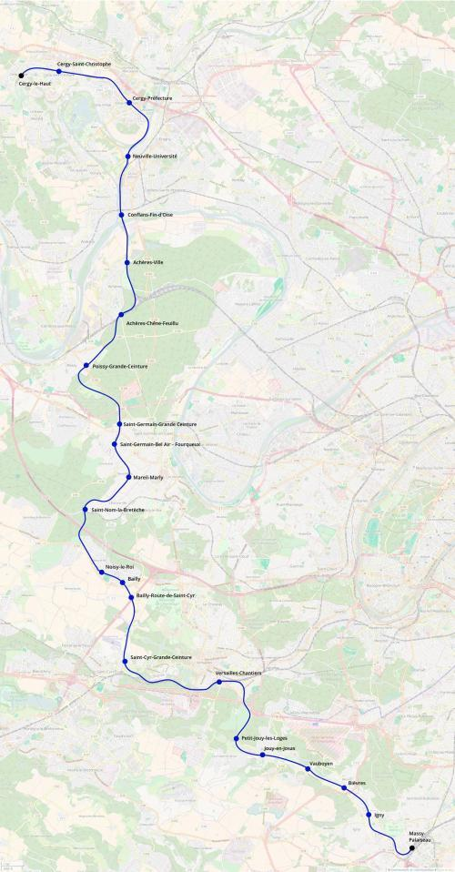

Tangentielle Yvelines
Tangentielle Yvelines
Cergy-le-Haut - Massy-Palaiseau
Une nouvelle tangentielle pour le réseau Île-de-France
La tangentielle Yvelines serait un nouvel axe de transport qui relierait les pôles de Cergy-Pontoise et de Massy-Palaiseau. Elle reprendrait l'infrastructure de la ligne de la Grande Ceinture sur la plus grande partie de son tracé. Elle permettrait à de nombreux voyageurs de transiter dans l'ouest de l'Île-de-France sans avoir à passer par Paris.
De nombreuses correspondances permettraient aux voyageurs qui l'emprunteraient de se rendre à l'aéroport de Roissy, la Défense, Mantes-la-Jolie ou Saint-Quentin-en-Yvelines. À ses deux extremités elles serait en correspondance d'autres tangentielles: tangentielle Val-d'Oise à Conflans-Fin-d'Oise et tangentielles Essonnes et Val-de-Marne à Massy - Palaiseau.
Carte
{kind=link}

Cliquer pour agrandir
Stations
Si ce projet vous intéresse n'hésitez pas à le (re-)partagez sur les réseaux sociaux ou par courriel ou à en parler autour de vous.
Si vous souhaitez travailler à la concrétisation de ce projet, passez à l'action et contactez nous.
Commenter